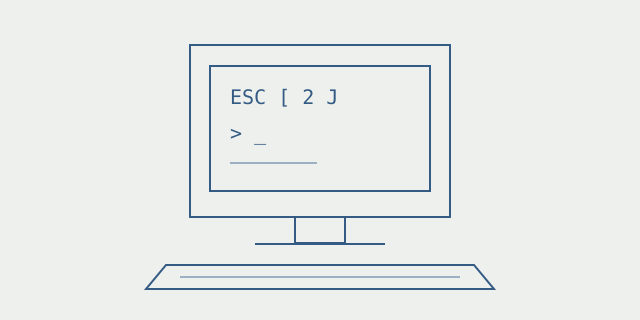

The terminal is a protocol
What a 1978 terminal has in common with the window on your laptop.
A terminal window looks like a place to type commands. Underneath, it is also a conversation: key presses go one way, and text plus display instructions come back.
The VT100 manual describes this arrangement for a physical keyboard and screen. A program on the attached computer sends a sequence such as ESC [ 2 J to erase the display, or ESC [ H to move the cursor home. Those operations let a program update a screen instead of printing an endless transcript.

Modern terminal emulators still recognize many of these sequences. That shared vocabulary is one reason a command-line interface can work across machines without shipping a separate graphical interface for each one.
Compatibility has edges
A shared vocabulary does not mean identical capabilities. Unicode, colors, and newer control sequences need support at the other end. Nikhil Jha’s experiment with a real VT100 makes those assumptions visible: software that behaves well in a modern emulator can still overwhelm or confuse the older hardware.
That suggests a useful design exercise even without an old terminal on the desk. Decide which features are essential. Keep the plain-text output useful. Add richer rendering only when the terminal can handle it. A progress indicator should not make the underlying command harder to use.
The interesting part of the VT100 today is the boundary it exposes. The application decides what to say; the terminal decides how to display the bytes it understands.